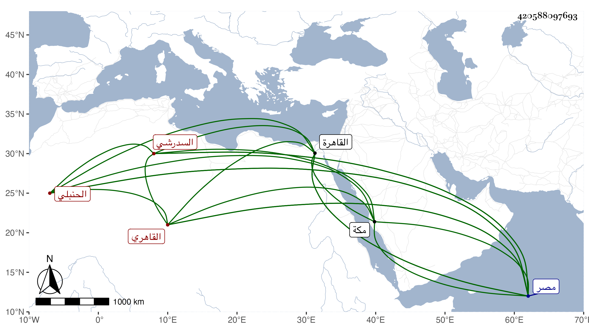

0902Sakhawi.DawLamic.ITO20230111-ara1.EIS1600.420588097693
Biography ID: 420588097693
160
محمد بن محمد بن أبي بكر بن خلد البدر السدرشي الاصل القاهري الحنبلي سبط القاضي نور الدين البويطي ، أمه آمنة ويعرف بالسعدي . ولد في ثالث شوال سنة ست وثلاثين وثمانمائة بجوار مدرسة البلقيني ومات أبوه وهو ابن ثلاث فنشأ في كفالة أمه وأمها وحفظ القرآن والوجيز وألفية النحو والتلخيص ومعظم جمع الجوامع فيما ذكره لي وجود في القرآن علي الزين جعفر السنهوري وربما قرأ عليه في غيره وأخذ النحو عن الابدي والراعي وأبي القسم النويري ومن ذلك عنه جل شرحه لمنظومته التي اختصر فيها الالفية والشمني ومنه عنه حاشيته على المغني وكذا أخذه هو والصرف عن العز عبد السلام البغدادي بل قرأ عليه جزءا من تصانيفه والبعض من النحو وغيره عن أبي الفضل المغربي ولازم التقي الحصني في الاصلين والمعاني والبيان والمنطق وغيرها وحضر عند الشرواني دروسا في المختصر وغيره وعند ابن الهمام ما قرئ عليه قبيل موته من تحريره في الاصول وقرأ على الكافياجي مؤلفه في كلمة التوحيد وغيره وعلى أبي الجود البني مجموع الكلائي وكتب عنه شرحه بل أخذ في الفرائض أيضا عن البوتيجي وفي الحساب عن السيد علي تلميذا ابن المجدي والشهاب السجيني وفي الميقات عن النور النقاش وفي الأدب عن ابن صلح وغيره وجود الخط على البرهان الفرنوي وكتب اليسير على أبي الفتح الحجازي بل كتب قبلهما يوما واحدا على الزين بن الصائغ ولازم شيخنا في كثير من دروس الحديث وغيرها وكتب عنه من أماليه وحمل عنه أشياء من تصانيفه وغيرها وأخذ في شرح الألفية الحديثية قراءة وسماعا عن المناوي وسمع على السيد النسابة والعلاء القلقشندي والعلم البلقيني والأمين الاقصرائي والقطب الجوجري وابن يعقوب والابودري وابني الفاقوسي وامام الصرغتمشية وعبد الكافي بن الذهبي وعبد الرحيم الاميوطي والتقي بن فهد وشعبان ابن عم شيخنا وخال أمه النور البلبيسي وخلق أعلاهم سارة ابنة ابن جماعة بالقاهرة ومصر وبعض ضواحيهما بل وبعض ذلك بمكة حج حجة الاسلام وتفقه بالنور بن الرزاز وكذا الجمال بن هشام ولكن قليلا مع دروس في النحو إلى غير هؤلاء ممن تذاكر معهم وتميز بضم ما معه لما عندهم ، ولازم شيخ المذهب العز الكناني في الفقه وغيره وقرأ عليه الكثير قبل القضاء وبعده في الدروس وغيرها واختص به فتوجه لتقديمه وتوجه بمزيد إرشاده وتفهيمه وأعانه هو بنفسه بحيث حقق منه ما كان في ظنه وحدسه وبمجرد ترعرعه وبدر صلاحه وحسن منزعه ولاه القضا وأولاه من الجميل ما يرتضي فتدرب فيه بمن يرد عليه من أعيان الموثقين وتقرب لذلك بما حصله من الفقه والفنون والمشار إليها بالتعيين فذكر بالجميل وشكر بنا لا يقبل التأويل وأذن له في الافتاء والتدريس غير واحد وأحسن في تأدية ما تحمله المقاصد فأفتى ودرس وأوضح بالتقييد والتقرير وما كان قد التبس ونظم ونثر وبحث ونظر ، واستقر في حياته في افتاء دار العدل وتدريس الفقه بالمنكوتمرية والقرا سنقرية مع مباشرتها والحديث بمسجدي رشيد وقطز وبعد موته في تدريس الفقه بالشيخونية ثم في قضاء الحنابلة بالديار المصرية لا تفاقهم على تقدمه على سائر حنابلتها وسار فيه أحسن سيرة وترقى في سائر أوصافه علما وفهما وخبرة تامة بالاحكام وحسن نظر في المكاتيب وعقلا ومداراة واحتمالا وتواضعا وعفة ومحاسن جمة حتى خضع له شيخ حنابلة الشام والعلاء المرداوي حين راسله يتعقب عليه أشياء وقعت في تصانيفه وأذعن لكونه مخطئا فيها والتمس منه المزيد من بيان ما يكون من هذا القبيل ليحصل له بذلك الأجر والثواب ، وقد كتب بخطه جملة وأجاب في عدة وقائع بما استحسنت كتابته فيه كل ذلك لحسن تصوره وجودة تدبره ، وعندي من فوائده القديمة والحديثة ما تطول الترجمة ببسطه ومع ذلك فكان قاضي الحنفية الشمس الامشاطي يناكده ويحيل عليه في الاستبدالات ويروم إما اختصاصه بها أو إشراكه معه فيها بعد مزيد إجلاله والتنويه به مساعدته قبل الولاية وبعدها وكون السبب في عزل ابن الشحنة واستقراره عقب توقفه عن الموافقة له في بعض القضايا ، ولم يزل يسترسل في المناكدة إلى أن اتفقت قضية مشعرة بمعارضة للملك فانتهز الفرصة ودس من لبس بحيث صرفه ثم أعاده بعد أيام وللاتابك فيه اليد البيضاء وتزايد السرور بعوده ، ولم يلبث أن مات الحنفي فتزايد في الارتقاء ودعوت له بطول البقاء وأثنى عليه السلطان فمن دونه واستقر في نقابته التقي بن القزازي الحنفي في سنة تسعين ثم صهره الرضي الاسحاقي وكلاهما ممن أجاد ، وقرأ عليه غير واحد من الفضلاء في العربية وغيرها ، وحدث بمسند امامه بتمامه وختم في مجمع حافل ولخص لامامه ترجمة حسنة التمس من المرور عليها ، إلى غير ذلك ، وحرص على ازدياد من الفضائل بحيث كتب بخطه من تصانيفه أشياء واستكتب كذلك سيما وبيننا من الودما اشتهر وتجدد له تدريس البرقوقية والمنصورية وغيرهما وناب في تدريس الصالح وأكثر من زيارة الصالحين أحياء وأمواتا مع خشوع وخضوع وتلاوة للقرآن وتوجه والتجاء .
